Dense informal settlements rarely permit comprehensive road reconstruction. The study reframes the problem as targeted micro-regeneration: reconstruct the existing urban fabric computationally, simulate evacuation under candidate widening plans, and search for non-dominated solutions that balance evacuation performance and intervention cost. In the completed 15-segment optimization, the method retained 39 non-dominated plans from 1,040 simulator evaluations. A representative intervention produced progressively larger improvements toward the tail of the evacuation process, while sensitivity analysis separated objective-space robustness from uncertainty in the exact road set.
real simulation evaluations
unique non-dominated solutions
shared initial-position seeds
mean reduction in t95 for the representative intervention
dominant road choices across tested settings
agents in the demanding stress-test configuration
Questions and contributions
The study moves from diagnosis to intervention while keeping cost, model assumptions, and decision uncertainty visible.
Computable urban morphology
Transform buildings, alleys, exits, and obstacles into a simulation-ready raster environment and obstacle-aware navigation field.
Simulation-derived bottlenecks
Identify persistent congestion and delayed-clearance corridors from crowd dynamics rather than from road width alone.
Cost-effectiveness frontier
Return a family of intervention portfolios so planners can choose among competing evacuation and reconstruction priorities.
Shipai Village as a morphological stress test
The approximately 80 ha study domain contains 1,660 building aggregates and a highly irregular pedestrian network. Typical alleys are approximately 0.8–3 m wide, with frequent dead ends and constrained connections.

The site combines dense building blocks, narrow alleys, irregular junctions, and multiple boundary exits.
A closed simulation–optimization chain
Each candidate plan changes the environment, so evacuation performance is recalculated by the simulator rather than approximated by a fixed surrogate.
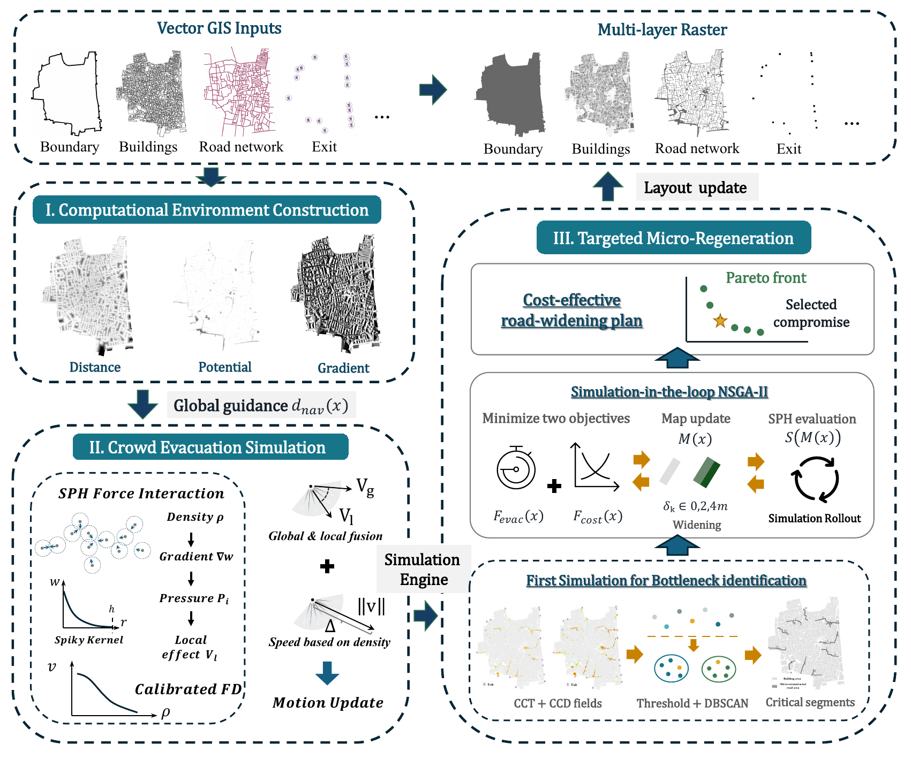
Three integrated components connect spatial reconstruction, evacuation simulation, and targeted micro-regeneration.
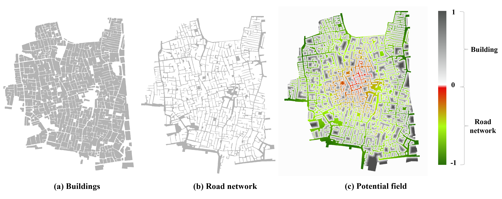
Obstacle-aware distance-to-exit information produces feasible local guidance directions.
Movement evidence
The SPH-based pedestrian model is calibrated against empirical corridor speed–density and flow–density relationships. Corridor experiments, free-flow lower-bound checks, and paired village-scale tests establish model plausibility and internal consistency within the stated protocol.
These checks do not constitute direct field validation of absolute village evacuation times.
Discrete road widening under competing objectives
15 candidate roads
Each segment receives no widening, 2 m widening, or 4 m widening.
Evacuation score
A simulation-derived objective captures clearance performance under the modified layout.
Reconstruction cost
Intervention burden increases with the selected segments and widening magnitude.
The finite-budget optimizer does not claim a unique global optimum. It constructs a set of non-dominated plans that expose the cost–performance trade-off available within the completed run.
Late clearance is spatially concentrated
Under the original layout, 87.73% of agents finish within 400 s. The residual population is concentrated in deep cul-de-sacs and constrained central corridors, making the tail of the process a spatial planning problem.
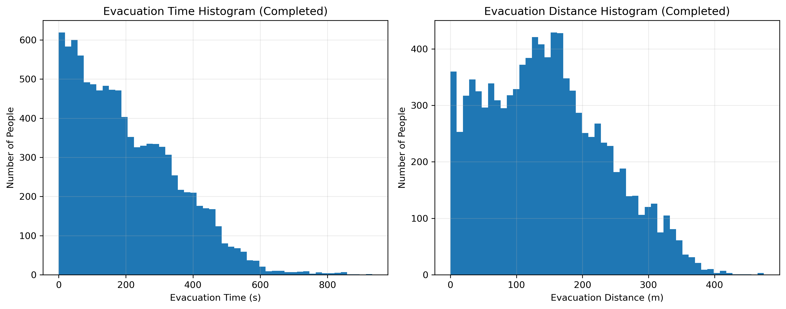
Distributions of simulated evacuation time and travel distance under the original layout.
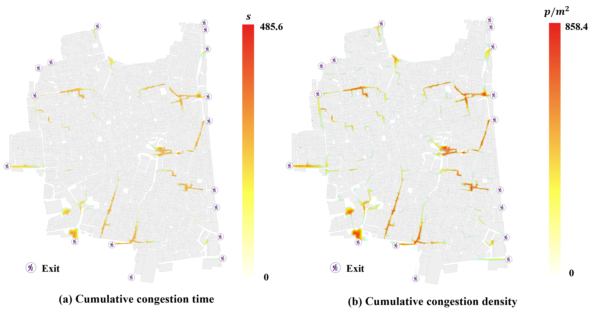
Spatial diagnostics reveal persistent bottlenecks rather than treating every narrow road as equally important.
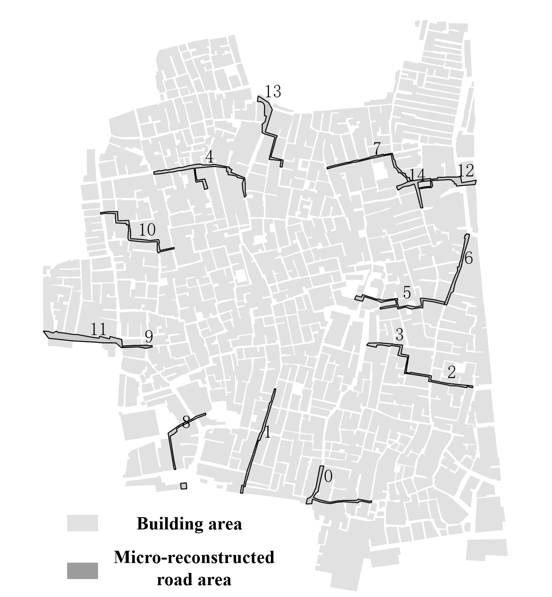
High-risk road segments are selected from the spatial simulation evidence and passed to the optimization stage.
A family of viable intervention portfolios
The completed seed-11 run retained 39 unique non-dominated plans from 1,040 real simulator calls. Representative points make the planning trade-off interpretable.
| Planning preference | Cost objective | Evacuation objective | Selected widening |
|---|---|---|---|
| No intervention | 0 | 1430.61 | Original layout |
| Lowest-cost nonzero | 375.19 | 1269.76 | R3 and R13, each 2 m |
| Ideal compromise | 747.52 | 1197.17 | R3 and R13, each 4 m |
| Evacuation priority | 1532.90 | 1155.65 | R3, R11, R13, R14 |
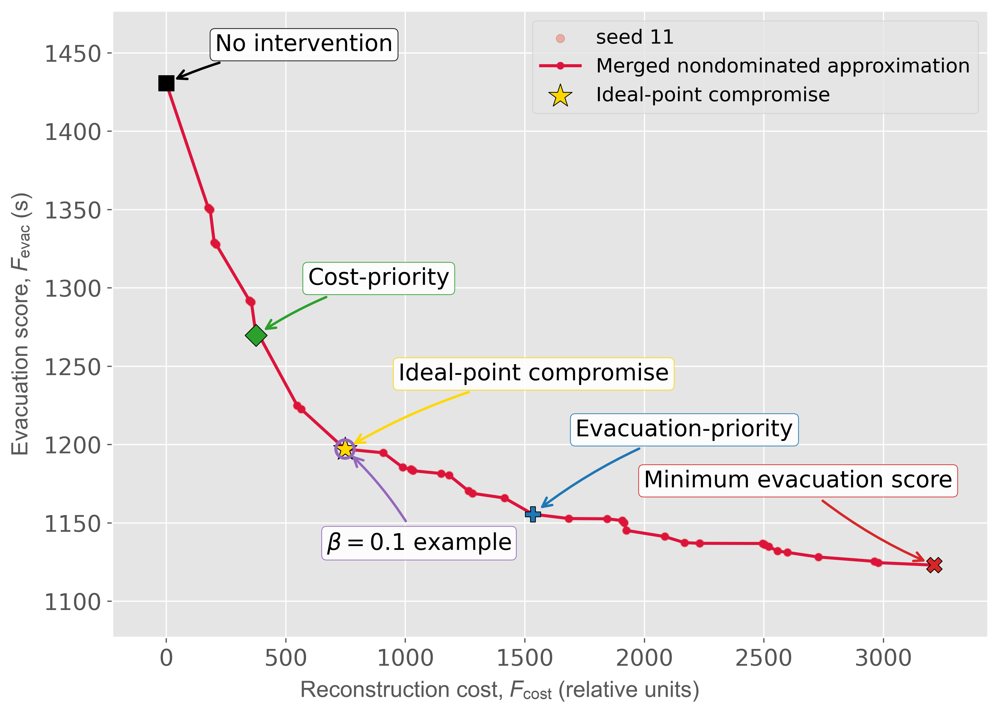
All retained non-dominated solutions and representative choices from the completed run. Incomplete runs are excluded.
The intervention effect grows toward the evacuation tail
The representative compromise is compared with the original layout across five paired seeds using identical initial positions and a 50,000-agent load.
| Metric | Original layout | Intervention | Mean improvement |
|---|---|---|---|
| t50 | 414.82 ± 2.18 s | 385.93 ± 2.08 s | 6.96 ± 0.13% |
| t80 | 951.97 ± 7.37 s | 792.07 ± 8.06 s | 16.80 ± 0.41% |
| t95 | 1913.22 ± 18.79 s | 1418.98 ± 27.24 s | 25.84 ± 0.82% |
| Normalized population-time | 580.33 ± 4.10 | 483.34 ± 4.53 | 16.71 ± 0.21% |
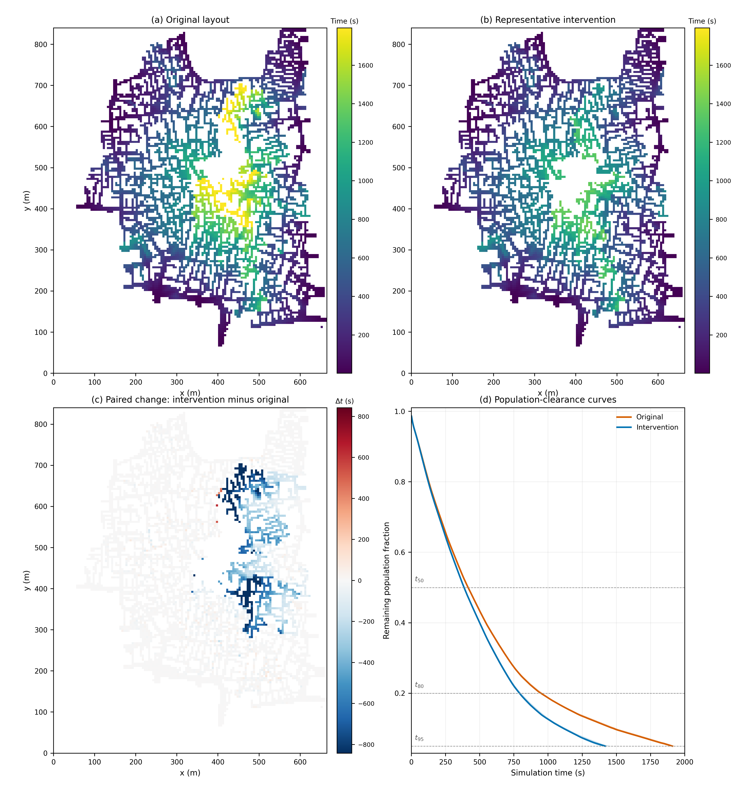
The strongest time reductions concentrate in central and central-eastern corridors; the remaining-population curve is shown to 95% clearance.
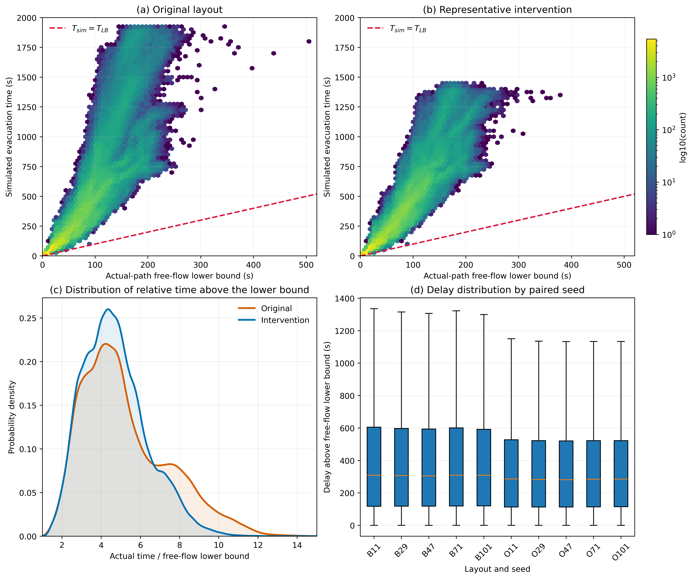
Simulated times are compared with actual-path lower bounds across five seeds.
Model response and plan stability are tested separately
The analysis distinguishes whether the objective values remain useful from whether the same roads are selected.
13 parameter scenarios
Across ±5% and ±10% perturbations of k, h, and ρmax, the zero-widening evacuation objective changes from −8.92% to +11.13%.
Benefit remains positive
The fixed plan retains 3.85–7.78% improvement; scenario-specific re-optimization yields 3.88–7.59%.
Jaccard 0.667–1.0
Width-weighted Jaccard ranges from 0.544 to 1.0. R3 and R13 dominate, with occasional R6 or R14.
HV spread 0.45%
Seven equal-call configurations show close objective-space performance but wider road-set Jaccard values of 0.278–0.639.
Plan Jaccard 1.0
All 39 physical scenario-seed combinations select R3 and R13 at 4 m; benefit ranges from 14.08% to 15.38%.
No uniqueness claim
Objective-space stability does not prove global convergence, parameter independence, or a unique widening plan.
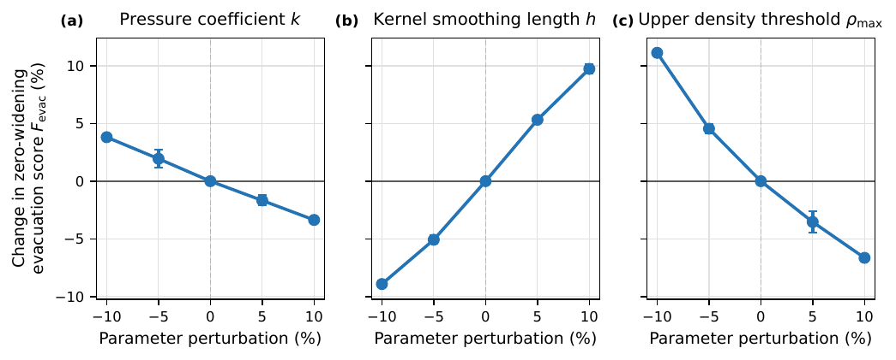
Mean ± SD across seeds 11, 29, and 47.
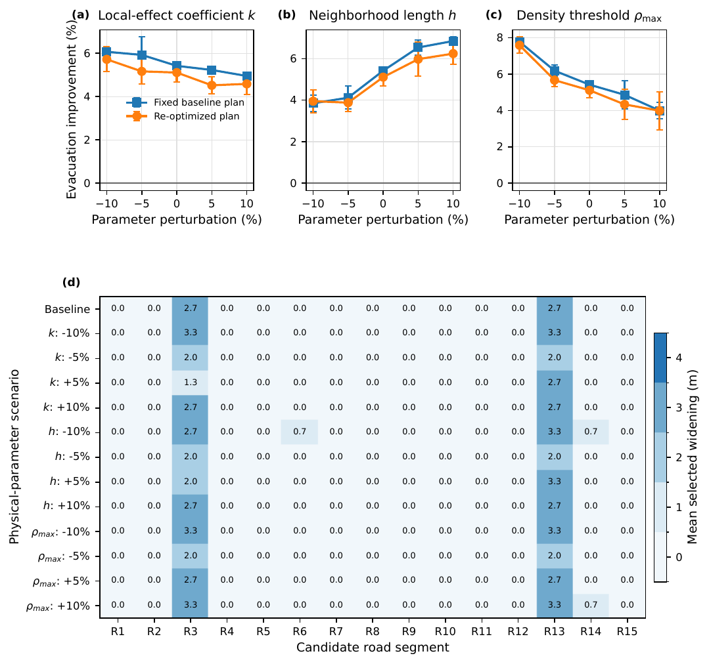
Fixed-plan and re-optimized benefits are shown beside mean widening decisions.
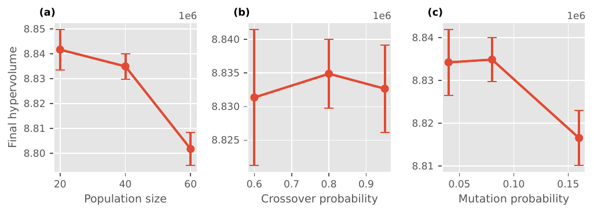
Final Hypervolume is compared with a common reference point across seeds and parameter settings.
Full-scale simulation remains practical for iterative planning
empirical end-to-end runtime in the fixed Shipai domain
empirical end-to-end runtime in the same domain
for 1,040 calls, averaging approximately 20.99 s per evaluation
How to read the evidence
- Corridor calibration, paired seeds, and free-flow checks support plausibility and internal consistency; they do not directly validate absolute village clearance times against a field evacuation.
- Hypervolume supports the attained objective-space trade-off under its stated reference point. Road-selection stability requires Jaccard-based decision comparison.
- The 50,000-agent consistency result is evidence for this Shipai stress test, not a general law that higher density always produces a unique bottleneck plan.
- Behavioral heterogeneity, compliance, dynamic hazards, and multi-hazard interactions remain outside the present optimization experiment.
Localized spatial change can produce system-level evacuation gains
The study demonstrates a practical way to connect urban morphology, crowd dynamics, and constrained intervention design. The method does not assume that every narrow alley should be widened. It identifies where targeted change is most consequential, evaluates each plan with the simulator, and exposes the cost–performance frontier available to planners.
- The integrated framework links spatial reconstruction, calibrated simulation, bottleneck diagnosis, and multi-objective micro-regeneration.
- In Shipai, the representative intervention produces clear reductions in middle and late clearance metrics, with the largest relative gain at t95.
- R3 and R13 are the most persistent intervention targets across the tested settings.
- The objective-space approximation is comparatively stable, while the exact road set remains more uncertain in lower-population optimizer tests.
- The 50,000-agent experiments show stronger decision consistency within Shipai, but do not establish cross-city generality.
- Future work should extend the framework to behavioral heterogeneity, dynamic and multi-hazard scenarios, multi-seed Pareto analysis, and additional urban morphologies.
Original figures
Selected paper-format vector figures used in the website remain available for detailed inspection.